CAN及其协议简介¶
本文摘自瑞萨的一篇应用手册 --《CAN 入门书》，该资料是面向 CAN 总线初学者的 CAN 入门书。对 CAN 是什么、CAN 的特征、标准规格下的位置分布等、CAN 的概要及 CAN 的协议进行了说明。
CAN是什么¶
CAN 是 Controller Area Network 的缩写（以下称为 CAN），是 ISO 国际标准化的串行通信协议。
在当前的汽车产业中，出于对安全性、舒适性、方便性、低公害、低成本的要求，各种各样的电子控制系统被开发了出来。由于这些系统之间通信所用的数据类型及对可靠性的要求不尽相同，由多条总线构成的情况很多，线束的数量也随之增加。为适应“减少线束的数量”、“通过多个 LAN，进行大量数据的高速通信”的需要， 1986 年德国电气商博世公司开发出面向汽车的 CAN 通信协议。此后， CAN 通过 ISO11898 及 ISO11519 进行了标准化，现在在欧洲已是汽车网络的标准协议。
现在， CAN 的高性能和可靠性已被认同，并被广泛地应用于工业自动化、船舶、医疗设备、工业设备等方面。
图 1 是车载网络的构想示意图。 CAN 等通信协议的开发，使多种 LAN 通过网关进行数据交换得以实现。
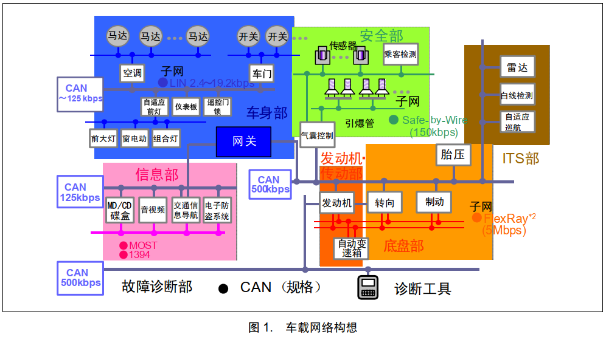
应用示例¶
图 2 为 CAN 的应用示例
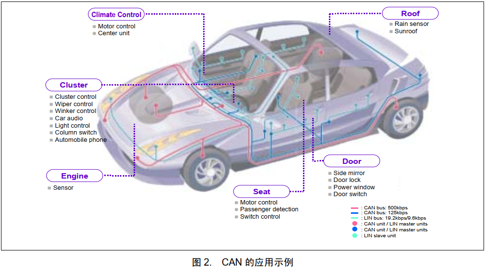
总线拓扑图¶
CAN 控制器根据两根线上的电位差来判断总线电平。总线电平分为显性电平和隐性电平，二者必居其一。发送方通过使总线电平发生变化，将消息发送给接收方。
图 3 是 CAN 的连接示意图
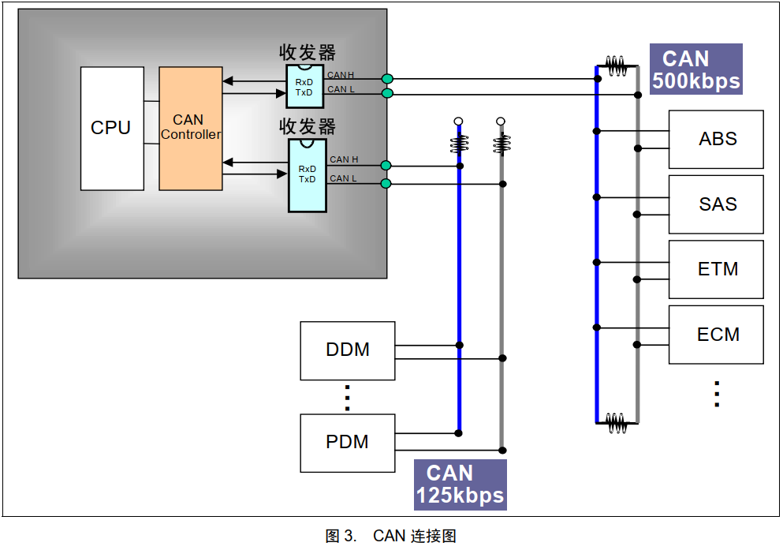
CAN的特点¶
CAN 协议具有以下特点。
- 多主控制
在总线空闲时，所有的单元都可开始发送消息（多主控制）。
最先访问总线的单元可获得发送权（CSMA/CA 方式（Carrier Sense Multiple Access / Collision Avoidance））。
多个单元同时开始发送时，发送高优先级 ID 消息的单元可获得发送权。 - 消息的发送
在 CAN 协议中，所有的消息都以固定的格式发送。总线空闲时，所有与总线相连的单元都可以开始发送新消息。两个以上的单元同时开始发送消息时，根据标识符（Identifier 以下称为 ID）决定优先级。 ID 并不是表示发送的目的地址，而是表示访问总线的消息的优先级。两个以上的单元同时开始发送消息时，对各消息 ID 的每个位进行逐个仲裁比较。仲裁获胜（被判定为优先级最高）的单元可继续发送消息，仲裁失利的单元则立刻停止发送而进行接收工作。 - 系统的柔软性
与总线相连的单元没有类似于“地址”的信息。因此在总线上增加单元时，连接在总线上的其它单元的软硬件及应用层都不需要改变。 - 通信速度
根据整个网络的规模，可设定适合的通信速度。
在同一网络中，所有单元必须设定成统一的通信速度。即使有一个单元的通信速度与其它的不一样，此单元也会输出错误信号，妨碍整个网络的通信。不同网络间则可以有不同的通信速度。 - 远程数据请求
可通过发送“遥控帧” 请求其他单元发送数据。 - 错误检测功能·错误通知功能·错误恢复功能
所有的单元都可以检测错误（错误检测功能）。
检测出错误的单元会立即同时通知其他所有单元（错误通知功能）。
正在发送消息的单元一旦检测出错误，会强制结束当前的发送。强制结束发送的单元会不断反复地重新发送此消息直到成功发送为止（错误恢复功能）。 - 故障封闭
CAN 可以判断出错误的类型是总线上暂时的数据错误（如外部噪声等）还是持续的数据错误（如单元内部故障、驱动器故障、断线等）。由此功能，当总线上发生持续数据错误时，可将引起此故障的单元从总线上隔离出去。 - 连接
CAN 总线是可同时连接多个单元的总线。可连接的单元总数理论上是没有限制的。但实际上可连接的单元数受总线上的时间延迟及电气负载的限制。降低通信速度，可连接的单元数增加；提高通信速度，则可连接的单元数减少。
错误¶
错误状态的种类¶
单元始终处于 3 种状态之一。
(1) 主动错误状态
- 主动错误状态是可以正常参加总线通信的状态。
- 处于主动错误状态的单元检测出错误时，输出主动错误标志。
(2) 被动错误状态
- 被动错误状态是易引起错误的状态。
- 处于被动错误状态的单元虽能参加总线通信，但为不妨碍其它单元通信，接收时不能积极地发送错误通知。
- 处于被动错误状态的单元即使检测出错误，而其它处于主动错误状态的单元如果没发现错误，整个总线也被认为是没有错误的。
- 处于被动错误状态的单元检测出错误时，输出被动错误标志。
- 另外，处于被动错误状态的单元在发送结束后不能马上再次开始发送。在开始下次发送前，在间隔帧期间内必须插入“延迟传送”(8 个位的隐性位)。
(3) 总线关闭态
- 总线关闭态是不能参加总线上通信的状态。
- 信息的接收和发送均被禁止。
这些状态依靠发送错误计数和接收错误计数来管理，根据计数值决定进入何种状态。错误状态和计数值的关系如表 1 及图 4 所示。
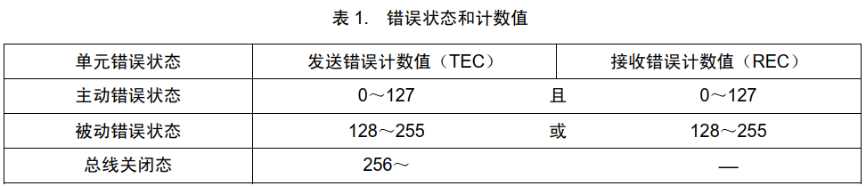
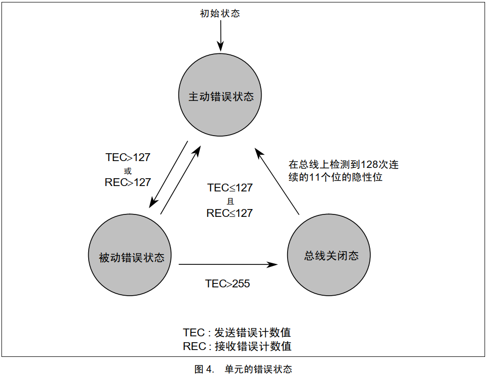
错误计数值¶
- 发送错误计数值和接收错误计数值根据一定的条件发生变化。
- 错误计数值的变动条件如表 2 所示。
- 一次数据的接收和发送可能同时满足多个条件。
- 错误计数器在错误标志的第一个位出现的时间点上开始计数。
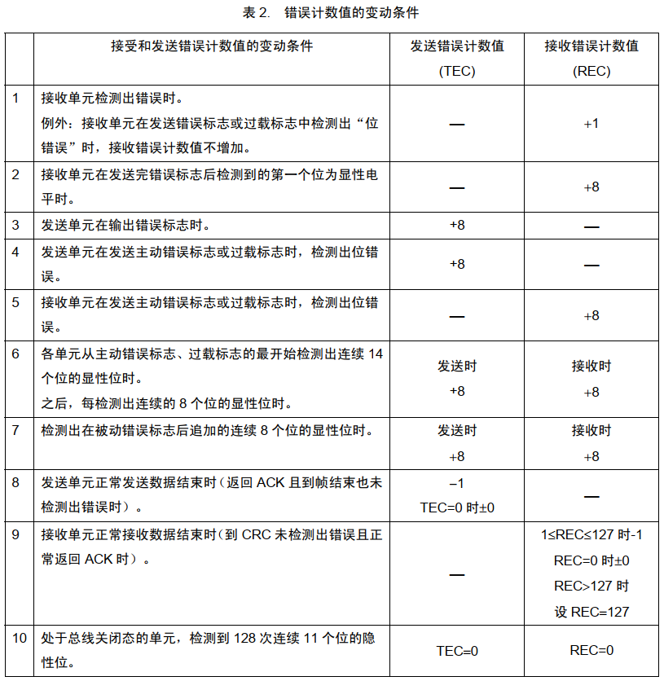
CAN协议的基本概念¶
CAN 协议如表 3 所示涵盖了 ISO 规定的 OSI(Open Systems Interconnection) 基本参照模型中的传输层、数据链路层及物理层。
CAN 协议中关于 ISO/OSI 基本参照模型中的传输层、数据链路层及物理层，具体有哪些定义如图 5 所示。
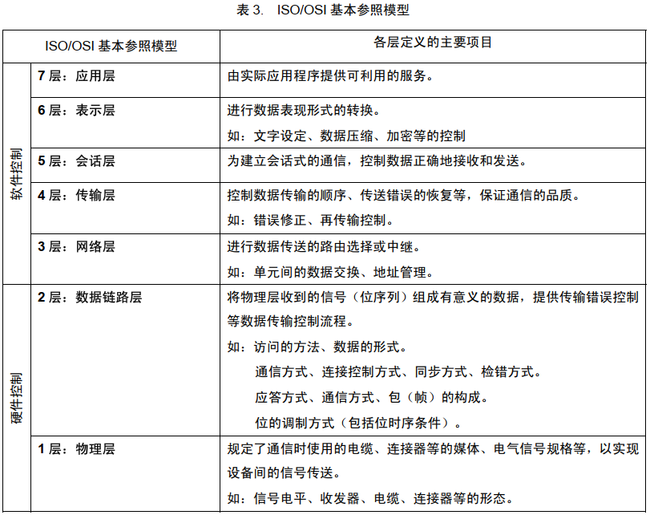
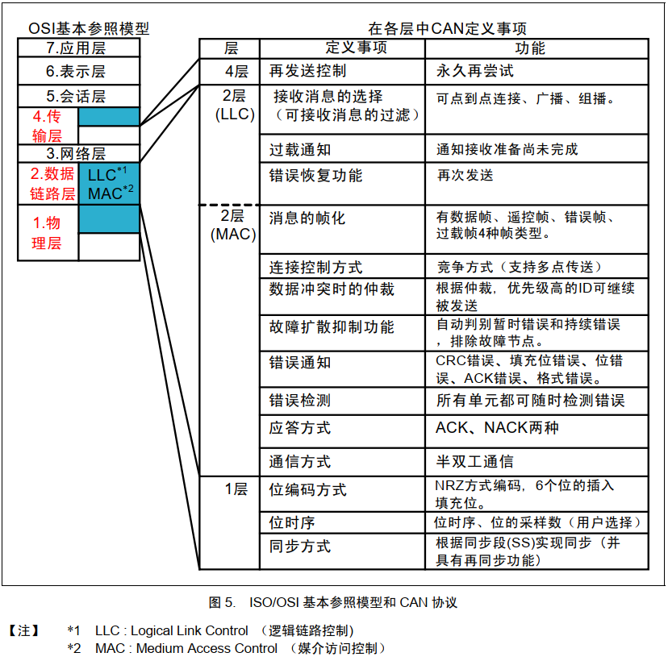
数据链路层分为 MAC 子层和 LLC 子层， MAC 子层是 CAN 协议的核心部分。数据链路层的功能是将物理层收到的信号组织成有意义的消息，并提供传送错误控制等传输控制的流程。具体地说，就是消息的帧化、仲裁、应答、错误的检测或报告。数据链路层的功能通常在 CAN 控制器的硬件中执行。
在物理层定义了信号实际的发送方式、位时序、位的编码方式及同步的步骤。但具体地说，信号电平、通信速度、采样点、驱动器和总线的电气特性、连接器的形态等均未定义*1。这些必须由用户根据系统需求自行确定。
【注】 *1 驱动器及总线的电气特性等在博世公司的 CAN 规格书中没有定义。但在 CAN 的 ISO 标准（ ISO11898、 ISO11519-2 等）中分别定义了总线及驱动器的电气特性等。
CAN协议及标准规格¶
ISO标准化的CAN协议¶
CAN 协议经 ISO 标准化后有 ISO11898 标准和 ISO11519-2 标准两种。 ISO11898 和 ISO11519-2 标准对于数据链路层的定义相同，但物理层不同。
(1) 关于 ISO11898
- ISO11898 是通信速度为 125kbps-1Mbps 的 CAN 高速通信标准。
- 目前， ISO11898 追加新规约后，成为 ISO11898-1 新标准。
(2) 关于 ISO11519
- ISO11519 是通信速度为 125kbps 以下的 CAN 低速通信标准。
- ISO11519-2 是 ISO11519-1 追加新规约后的版本。
图 6 表示 CAN 协议和 ISO11898 及 ISO11519-2 标准的范围。
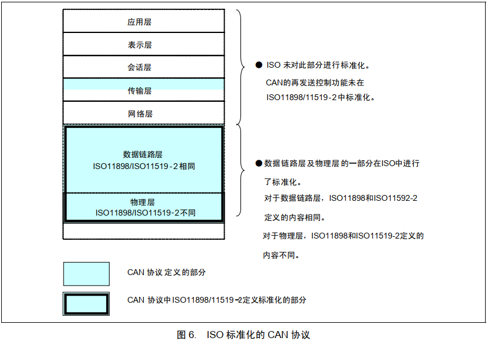
ISO11898和ISO11519-2的不同点¶
(1) 物理层的不同点
如图 6 所示， ISO11898 和 ISO11519-2 在 CAN 协议中物理层的标准有所不同。 CAN 协议的物理层如图 7 所示，定义了三个子层， ISO11898 和 ISO11519-2 在物理层中的 PMA 层和 MDI 层有所不同。
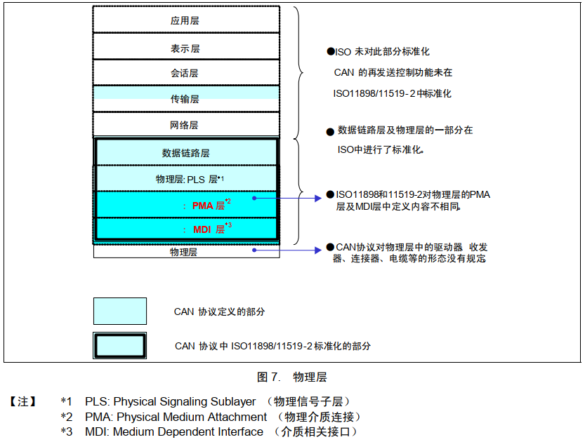
在物理层（PMA 层、 MDI 层）， ISO11898 和 ISO11519-2 的主要不同点如表 4 所示
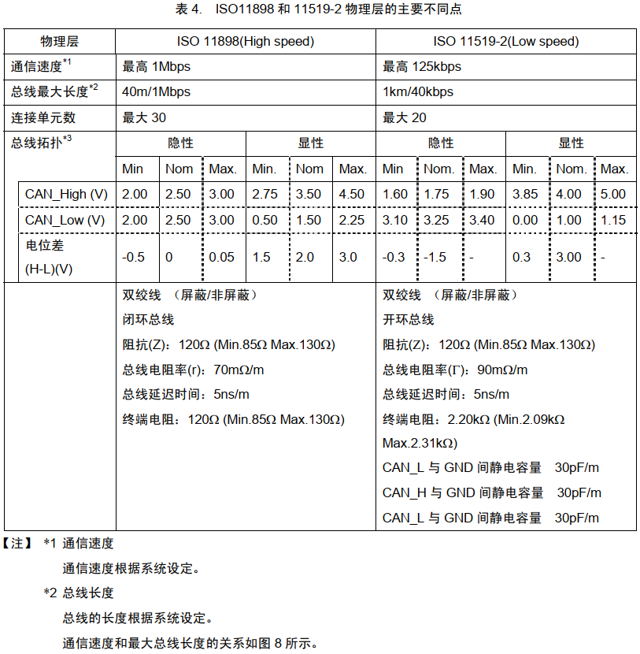
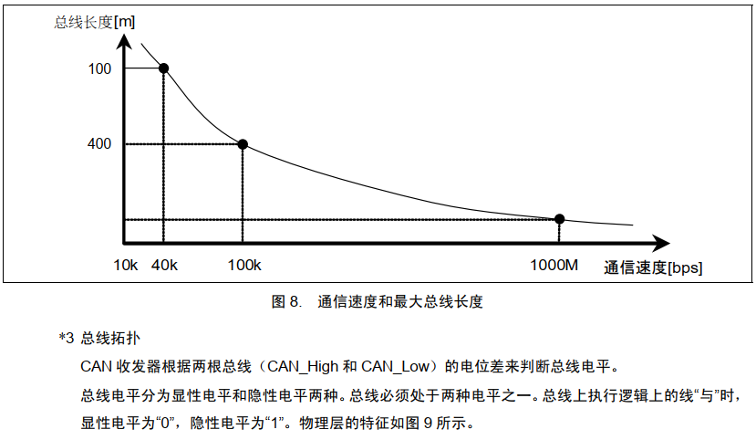
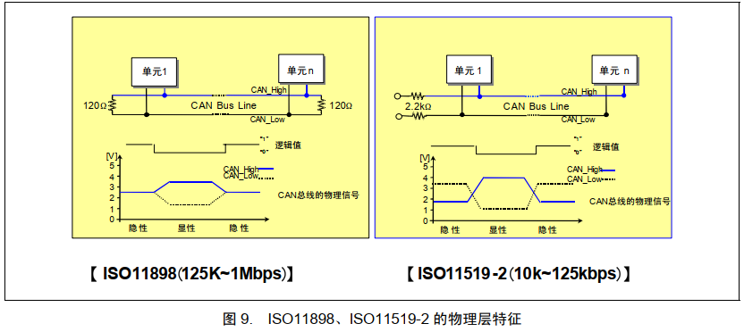
(2) 驱动 IC 的选择
ISO11898 与 ISO11519-2 的物理层的规格不同，每种规格需要有专门的驱动 IC 与之相对应。 ISO11898 及 ISO11519-2 所对应的主要的驱动 IC 如表 5 所示。
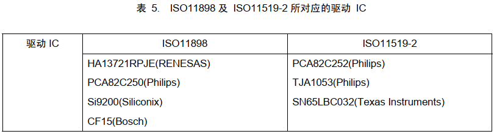
CAN和标准规格¶
不仅是 ISO， SAE*1 等其它的组织、团体、企业也对 CAN 协议进行了标准化。
基于 CAN 的各种标准规格如表 6 所示，如图 10 所示，面向汽车的通信协议以通信速度为准进行了分类。
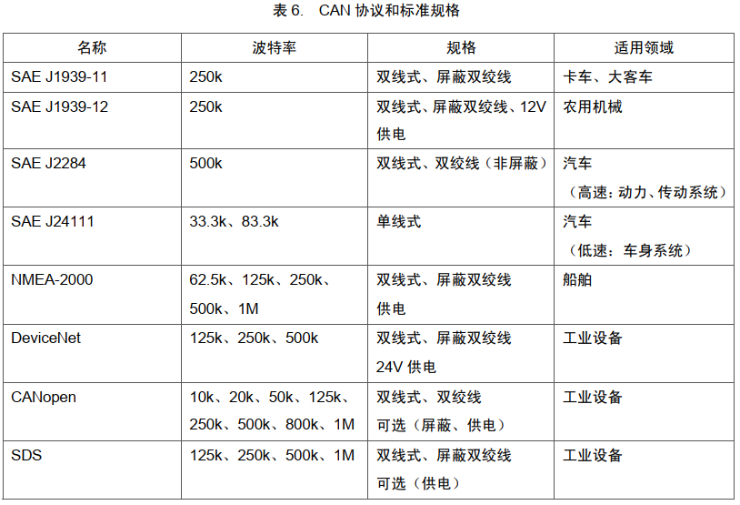
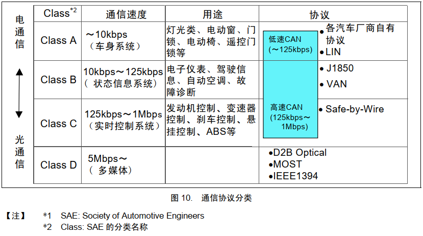
CAN协议¶
帧的种类¶
通信是通过以下 5 种类型的帧进行的。
- 数据帧
- 遥控帧
- 错误帧
- 过载帧
- 帧间隔
另外， 数据帧和遥控帧有标准格式和扩展格式两种格式。 标准格式有 11 个位的标识符（Identifier: 以下称 ID），扩展格式有 29 个位的 ID。
各种帧的用途如表 7 所示，各种帧的构成如图 11 ～ 图 15 所示。
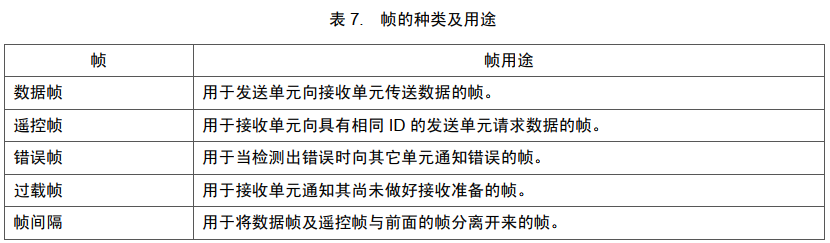
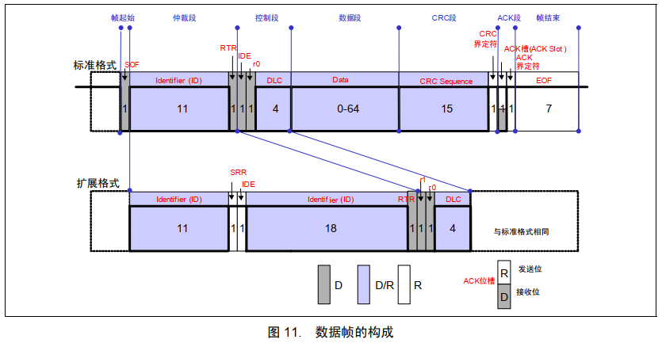
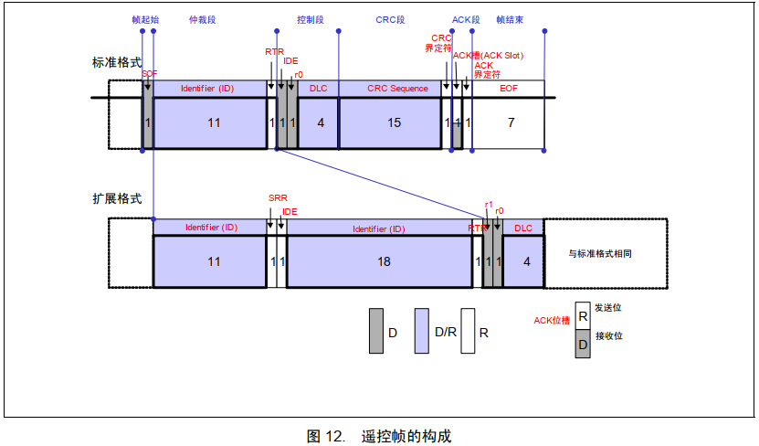
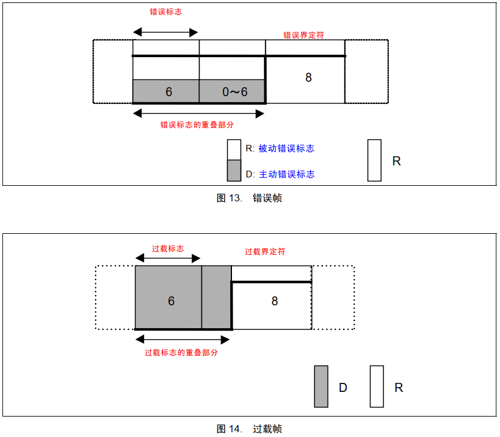
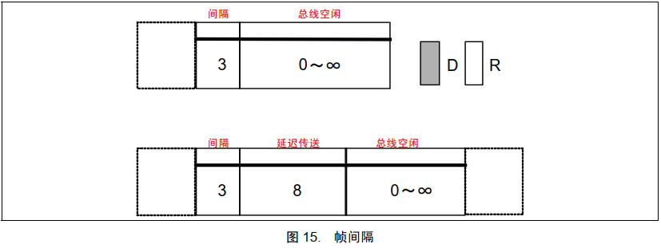
数据帧¶
数据帧由 7 个段构成。
数据帧的构成如图 16 所示。
- 帧起始
表示数据帧开始的段。 - 仲裁段
表示该帧优先级的段。 - 控制段
表示数据的字节数及保留位的段。 - 数据段
数据的内容，可发送 0～8 个字节的数据。 - CRC 段
检查帧的传输错误的段。 - ACK 段
表示确认正常接收的段。 - 帧结束
表示数据帧结束的段。
下面对帧的构成进行说明。
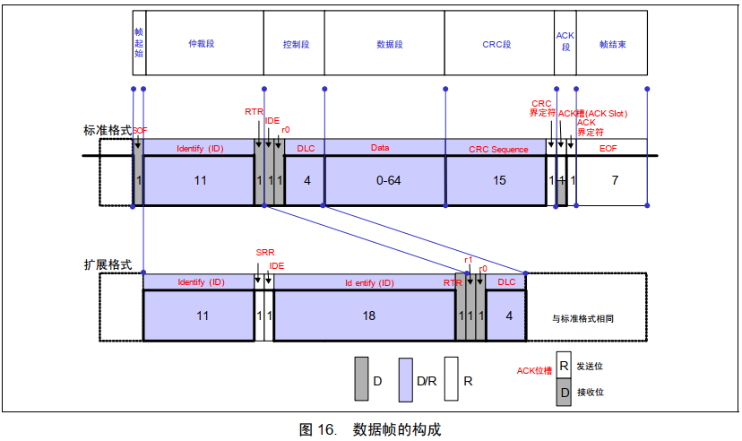
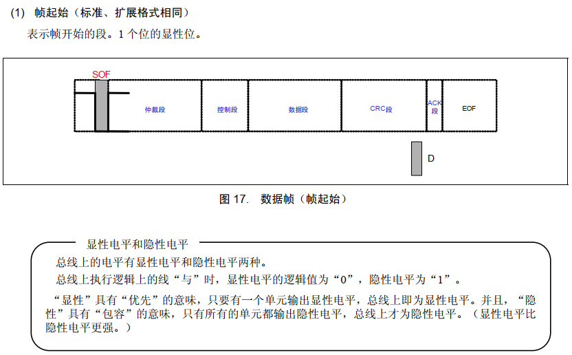
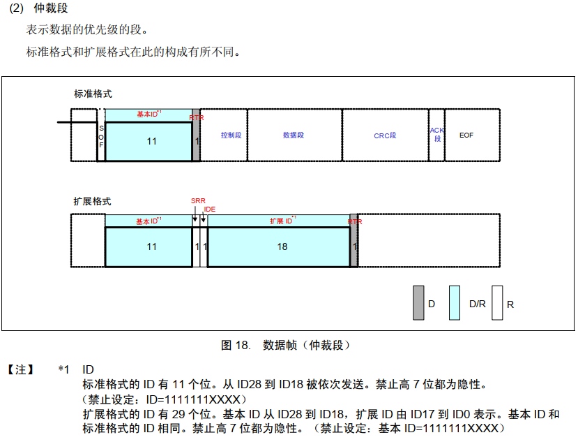
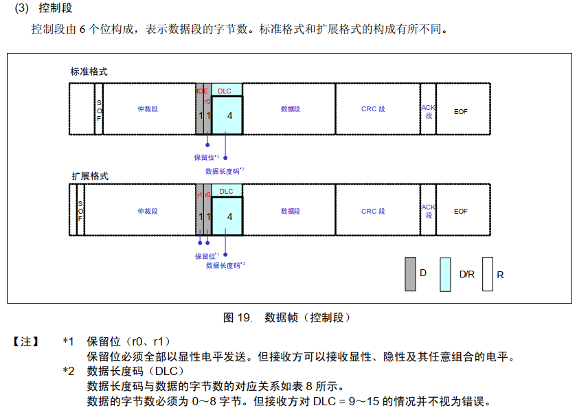
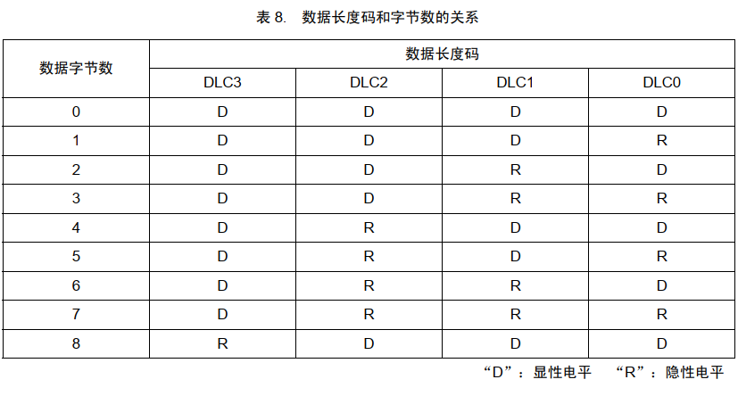
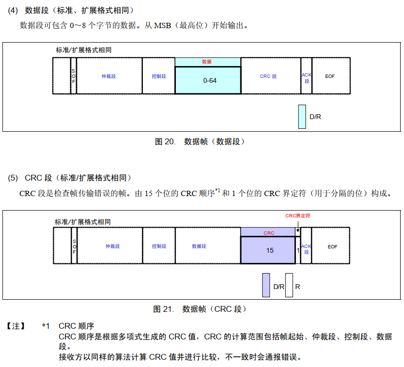
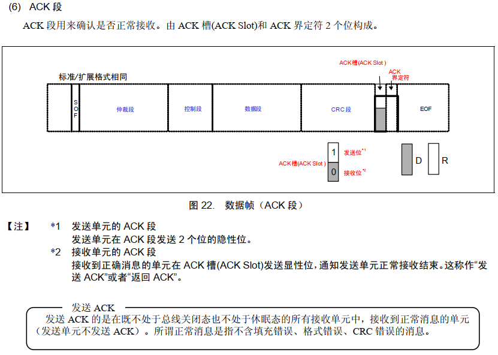
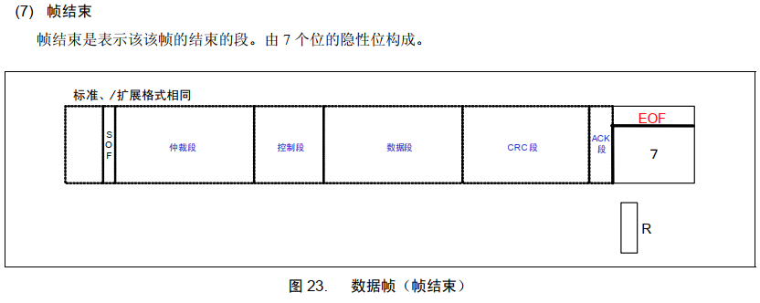